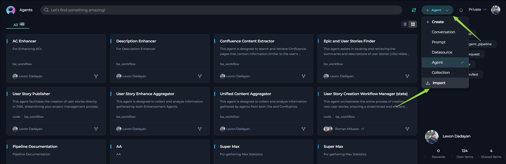
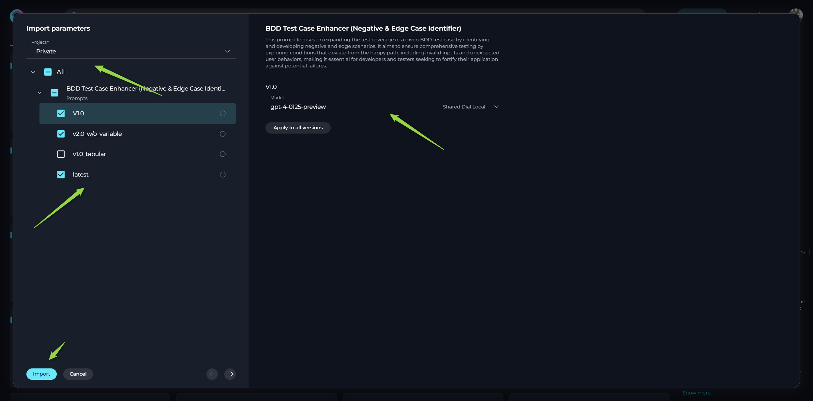

Export and Import Guide: Managing Prompts, Datasources, and Agents for Backup, Migration, and Collaboration
Introduction
This user guide provides a comprehensive overview of the Export and Import features within ELITEA. These powerful functionalities allow you to seamlessly transfer your valuable entities – Prompts, Datasources, and Agents – between different ELITEA environments, projects, or for backup purposes.
The ability to export and import entities offers significant flexibility and control over your AI workflows. You can leverage these features in various scenarios, including:
- Migrating Entities: Effortlessly move your carefully crafted prompts, configured datasources, and intelligent agents from one ELITEA environment to another. For instance, you can migrate entities from an ELITEA Alita LAB environment to a new Nexus environment.
- Sharing and Collaboration: Share your entities with colleagues working in different projects or ELITEA instances, fostering collaboration and knowledge sharing.
- Backup and Recovery: Create backups of your critical entities, ensuring data safety and enabling quick recovery in case of unforeseen issues.
- Development and Testing: Develop and test entities in a dedicated environment and then easily import them into your production environment.
This guide will detail the process of exporting and importing each entity type, along with best practices and practical use cases to help you effectively utilize these features.
Import and Export Features: A General Overview
The Export feature allows you to save a snapshot of your prompts, datasources, or agents as JSON files. These files contain the complete configuration and relevant data of the entity at the time of export.
The Import feature enables you to bring previously exported JSON files back into ELITEA. During the import process, you have the flexibility to configure certain aspects of the imported entity, such as the target project and specific settings.
These features provide a convenient and reliable way to manage and transfer your assets within and across ELITEA environments.
How to Export Entities
ELITEA allows you to export prompts, datasources, and agents individually. The export process is similar for each entity type.
- Log in to ELITEA: Access the ELITEA platform using your credentials.
- Navigate to the Project: Go to the specific project that contains the prompt, datasource, or agent you wish to export.
- Access the Relevant Menu: Within the project, navigate to the menu corresponding to the entity type you want to export (e.g., Prompts, Datasources, or Agents).
- Locate the Entity for Export: Find the specific entity you want to export within the list. ELITEA offers two view options, and the export process varies slightly depending on the view you are using:
a. Card List View: If you are viewing your entities in a card format, click on the specific entity's card that you wish to export. This will open the entity's details. Once open, locate and click the Export [entity type] icon (e.g., Export prompt, Export datasource, or Export agent).
b. Table View: If you are viewing your entities in a table format, locate the entity you want to export in the list. In the Actions column, which is usually the last column in the table, click on the ellipsis icon (
...) next to the entity. A dropdown menu will appear. Select the Export option from this menu. - Automatic Download: Upon clicking the Export icon or selecting the Export option, your web browser will automatically initiate the download of a JSON file. This file contains all the configuration data for the exported entity and will be saved to your local device's default download location.
This process allows you to easily export your ELITEA entities for various purposes, such as sharing them with others or creating backups of your configurations.
Exporting a Prompt
- Navigate to the Prompts menu within the project containing the prompt you wish to export.
- Locate the specific prompt you want to export.
- Open the prompt and click the Export prompt icon.
- Your browser will automatically download a JSON file containing the prompt's data to your local device.

The exported JSON file includes:
- All versions of the prompt.
- The complete configuration of each version, including:
- Context
- Messages (System, Assistant, User)
- Variables and their potential values
- Settings (Model, Temperature, Top-P, Top-K, Max Completion Tokens)
- Welcome Message
- Conversation Starters
- Tags
Exporting a Datasource
- Navigate to the Datasources menu within the project containing the datasource you wish to export.
- Locate the specific datasource you want to export.
- Open the datasource and click the Export datasource icon.
- Your browser will automatically download a JSON file containing the datasource's data to your local device.

The exported JSON file includes:
- The complete configuration of the datasource, including:
- Name and Description
- Context
- Welcome Message
- Conversation Starters
- Tags
- Settings for Chat, Search, and Deduplicate functionalities (including selected LLM and Embedding Models)
- Dataset configurations (including storage details and connection parameters, excluding authentication credentials)
Important Security Note: For security purposes, the authentication information for datasets (such as API Keys, usernames, tokens, and passwords) is not included in the exported datasource file. You will need to re-enter this information when importing the datasource.
Exporting an Agent
- Navigate to the Agents menu within the project containing the agent you wish to export.
- Locate the specific agent you want to export.
- Open the agent and click the Export agent icon.
- Your browser will automatically download a JSON file containing the agent's data to your local device.

The exported JSON file includes:
- All versions of the agent.
- The complete configuration of each version, including:
- Name and Description
- Context
- Welcome Message
- Conversation Starters
- Tags
- Settings (Model, Temperature, Top-P, Top-K, Max Completion Tokens)
- Toolkit configurations (including tool details and parameters, excluding authentication credentials)
Important Security Note: For security purposes, the authentication information for toolkits (such as API Keys, usernames, tokens, and passwords) is not included in the exported agent file. You will need to re-enter this information when importing the agent.
Exporting Collections
Collections in ELITEA provide a powerful way to group and organize various entities such as prompts, datasources, and agents into a single, manageable unit. This organizational structure offers the significant advantage of being able to export an entire collection at once, ensuring that all the entities within that collection are included in the export. This feature is particularly convenient for backing up related items, sharing groups of resources, or transferring sets of configurations between environments.
Benefits of Exporting Collections:
- Convenient Batch Export: Export all grouped entities (prompts, datasources, and agents) simultaneously, saving time and effort compared to exporting each item individually.
- Preserve Relationships: Maintain the logical grouping of your entities as defined by the collection structure.
- Simplified Sharing and Backup: Easily share a related set of resources or create a comprehensive backup of a specific project component.
To export a collection:
- Navigate to the Collections menu within the project that contains the collection you wish to export.
- Locate the specific collection you want to export within the list of available collections.
- Open the collection by clicking on its name or card.
- Once the collection is open, you will find an Export Collection icon. Click this icon to initiate the export process.
- Your browser will automatically download a JSON file to your local device. This file contains the data for the collection itself, along with the configuration details of all the prompts, datasources, and agents currently included within that collection.
This streamlined process allows you to efficiently manage and transfer groups of related assets within ELITEA.
How to Import Entities
ELITEA provides a straightforward import process for prompts, datasources, and agents.
- Login ELITEA.
- Click the +Quick button switcher, located in the top right corner of the interface.
- Click the Import button.
- Choose the appropiate file (in *.json) from your local device.
- An Import Wizard will appear, guiding you through the import process.

Importing a Prompt
- Select File: Choose the appropiate prompt file (in *.json) from your local device.
- Import Wizard - Prompt Options:
- Select Project: Choose the target project where you want to import the prompt. You can select your Private workspace or any other project where you have the necessary permissions.
- Select Versions to Import: You can choose to import all versions of the prompt or select specific versions. Note: It is highly recommended to select and import the 'latest' version of the prompt, otherwise you might have validation errors, preventing successful import, or resulting the imported prompt not to function as expected.
- Select LLM Model: For each version you are importing, you can select the desired LLM Model.
- If the LLM Model specified in the exported file is also available in your current ELITEA environment, it will be selected automatically.
- If the model is not available, the first available model in your environment will be selected as a default.
- You can manually change the selected model to your preferred choice before completing the import.
- Click the Import button in the Import Wizard.
- The imported prompt will now be available in the Prompts menu of the selected project.

Importing a Datasource
- Select File: Choose the appropiate datasource file (in *.json) from your local device.
- Import Wizard - Datasource Options:
- Select Project: Choose the target project where you want to import the datasource.
- Select Embedding Model: Choose the desired Embedding Model for the datasource.
- If the Embedding Model specified in the exported file is also available in your current ELITEA environment, it will be selected automatically.
- If the model is not available, the first available model in your environment will be selected as a default.
- You can manually change the selected model to your preferred choice.
- Configure Models for Chat, Search, and Deduplicate: Select the desired LLM models for the Chat, Search, and Deduplicate functionalities of the datasource.
- Provide Mandatory Parameters: Fill in all mandatory fields and parameters, which are highlighted with an asterisk
*. This typically includes the Storage type and various authentication parameters for the datasets. - Select Datasets to Import: Choose which datasets you want to import along with the datasource.
- Provide Dataset Authentication: For any datasets requiring authentication, you will need to manually provide the necessary credentials (API Keys, usernames, tokens, passwords).
- Click the Import button in the Import Wizard.
- The imported datasource will now be available in the Datasources menu of the selected project.
- Reindexing Datasets: After successfully importing the datasource, you must open the datasource and initiate the reindexing of the imported datasets. This step is crucial as the actual vector databases are not exported or imported.

Importing an Agent
- Select File: Choose the appropiate agent file (in *.json) from your local device.
- Import Wizard - Agent Options:
- Select Project: Choose the target project where you want to import the agent.
- Select Versions to Import: You can choose to import all versions of the agent or select specific versions. Note: It is highly recommended to select and import the 'latest' version of the agent, otherwise you might have validation errors, preventing successful import, or resulting the imported agent not to function as expected.
- Select LLM Model: For each version you are importing, you can select the desired LLM Model.
- If the LLM Model specified in the exported file is also available in your current ELITEA environment, it will be selected automatically.
- If the model is not available, the first available model in your environment will be selected as a default.
- You can manually change the selected model to your preferred choice before completing the import.
- Provide Mandatory Parameters: Fill in all mandatory fields and parameters, which are highlighted with an asterisk
*. This typically includes various authentication parameters for the agent's toolkits. - Select Tools to Import: Choose which tools you want to import along with the agent.
- Configure Tool Parameters: You can review and reconfigure the available options and parameters for each tool being imported. You can either use the default values from the exported file or customize them as needed.
- Provide Toolkit Authentication: For any toolkits requiring authentication, you will need to manually provide the necessary credentials (API Keys, usernames, tokens, passwords).
- Click the Import button in the Import Wizard.
- The imported agent will now be available in the Agents menu of the selected project.
Managing Master Agents with Connected Entities: Exporting and Importing
ELITEA simplifies the management of complex AI workflows by providing integrated features for exporting and importing 'master' agents along with their connected entities. This allows for efficient transfer of intricate AI workflows between different ELITEA environments or for creating comprehensive backups.
Exporting Master Agents with Connected Entities:
ELITEA offers a convenient feature to export a 'master' agent, ensuring that all its directly connected prompts, datasources, and child agents are included in the exported file. This is particularly useful for transferring complex AI solutions between different ELITEA environments or for creating comprehensive backups.
When you export a 'master' agent that has other agents, prompts, or datasources configured as toolkits, these nested entities are automatically included in the exported JSON file. This single file contains the configuration details for the 'master' agent and all its connected resources, simplifying the transfer process.
Importing Master Agents with Connected Entities:
When importing a 'master' agent from an exported file, ELITEA automatically imports all the connected prompts, datasources, and child agents that were included in the file. This streamlined process eliminates the need to import each component individually, making it significantly easier to transfer complex AI workflows between ELITEA environments.
Upon importing the 'master' agent's file, ELITEA will create the 'master' agent and all its associated toolkit entities in the target project, preserving the structure and relationships of the original workflow.
Benefits of Managing Master Agents with Connected Entities:
- Simplified Transfer of Complex Workflows: Move entire AI workflows, including agents and their dependencies, in a single operation.
- Preservation of Relationships: Maintain the connections and configurations between the 'master' agent and its toolkits during the transfer process.
- Time Efficiency: Avoid the manual effort of locating and importing each connected entity individually.
How it Works:
- Export: When exporting a 'master' agent, ELITEA identifies all the child prompts, datasources, and agents configured as toolkits and includes their configurations in the exported JSON file.
- Import: During import, ELITEA reads the file and creates the 'master' agent and all its listed toolkit entities in the target project, re-establishing the connections.
Important Considerations:
- As with individual entity importing, the actual datasets within datasources will need to be reindexed in the target project after importing the 'master' agent and its connected entities.
- As with individual entity importing, the authentication details for any configured toolkits and datasets are not copied to the new project. You will need to re-enter the authentication credentials (API Keys, usernames, tokens, passwords) for any toolkits and datasets while importing the 'master' agent.
These integrated features for managing 'master' agents and their connected entities provide a powerful and efficient way to handle complex AI workflows within ELITEA.
Importing a Collection
ELITEA allows you to import previously exported collection files, streamlining the process of adding multiple related entities to your project. This feature is particularly useful for quickly setting up pre-configured groups of prompts, datasources, and agents.
You can import a JSON file that contains all the information of an exported collection. This simplifies the process of adding multiple related entities at once.
Important Note: While importing a collection file will successfully import all the prompts, datasources, and agents contained within that file and add them to their respective menus, the Collection entity itself will not be automatically created as part of this import process. This is a current limitation of the platform. The individual entities will be imported, but you will need to manually recreate the collection and add the imported entities to it if you wish to maintain the original grouping. This functionality is planned for future updates.
To import a collection file:
- Select File: Choose the appropiate collection file (in *.json) from your local device.
- Import Wizard - Options:
- Select Project: Choose the target project where you want to import the entities.
- Select Entities: Choose the enities that you want to import, make corresponding configurations for each selected entity.
- Click the Import button in the Import Wizard.
- The individual entities will be imported and added to their respective menus.
After Importing:
After successfully importing the collection file, you will find the individual prompts, datasources, and agents in their respective menus (Prompts, Datasources, Agents). To recreate the original collection structure, you will need to:
- Navigate to the Collections menu.
- Create a new collection.
- Manually add the imported prompts, datasources, and agents to this newly created collection.
This process ensures that while the collection entity itself is not automatically recreated, all the individual components of the exported collection are successfully imported into your project.
Important Considerations for Importing Entities
- File Format: Ensure that the file you are importing is a valid ELITEA file in JSON format for the corresponding entity type. If you are making manual changes to the export file, ensure you save it in the correct JSON format and maintain the structure and required parameters of the file. Incorrect formatting or missing parameters will prevent successful import.
- Version Compatibility: While ELITEA strives for backward compatibility, importing entities created in significantly older versions of ELITEA might encounter compatibility issues.
- Context and Dependencies: If the imported entity has dependencies on other entities (e.g., an agent using other prompts, agents or datasources as toolkits), ensure that these dependencies are also present.
Best Practices and Use Cases
- Regular Backups: Utilize the export feature to create regular backups of your important prompts, datasources, and agents. Store these exported files in a safe location for disaster recovery purposes.
- Environment Migration: When migrating from one ELITEA environment to another (e.g., from a development to a production environment), export your entities from the source environment and import them into the target environment.
- Sharing with Colleagues: Export your well-crafted prompts or useful datasources, agents and share the JSON files with colleagues so they can import them into their own projects.
- Collaborative Development: Developers can work on different parts of an AI solution in separate ELITEA instances and then use export/import to integrate their work. For example, one developer might create a set of prompts, while another configures a datasource and the third one - agents.
- Template Creation: Create a library of reusable prompt, agent and datasource templates by exporting them. These templates can then be easily imported into new projects, saving time and effort.
- Security Considerations: Remember that authentication credentials for datasets and toolkits are not included in exported files. Ensure you have a secure way to manage and provide these credentials when importing.
- Testing in Isolation: Export a production agent and import it into a separate testing environment. This allows you to test new changes without impacting the live system.
By understanding and utilizing the Export and Import features effectively, you can significantly enhance your workflow within ELITEA, improve collaboration, and ensure the safety and portability of your valuable AI assets.